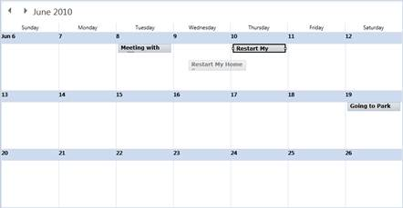
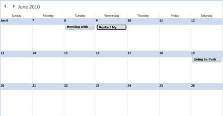

Appointments can also be dragged to other days when displayed in the month View. Appointments whose threshold time is not set will take the threshold time set in the Schedule control.

Figure 18: Appointment Dragged in Month View

Figure 19: Appointment Dropped in Month View